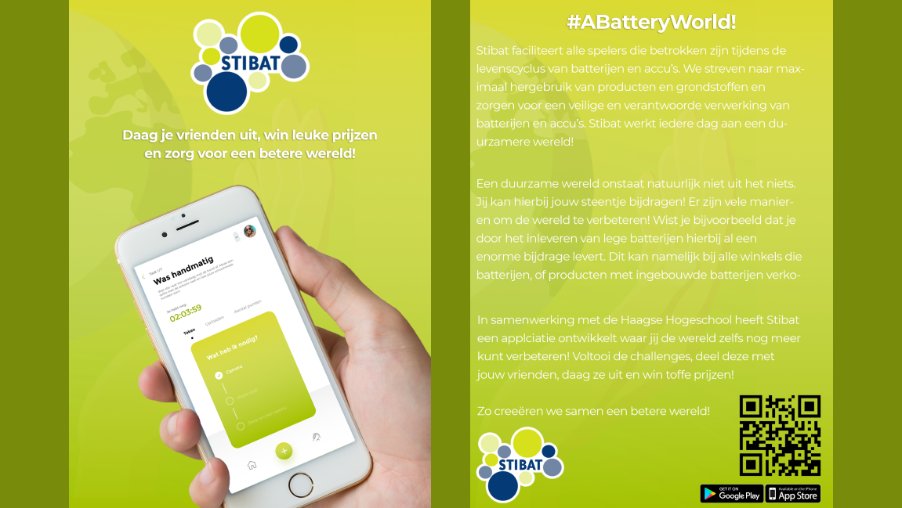
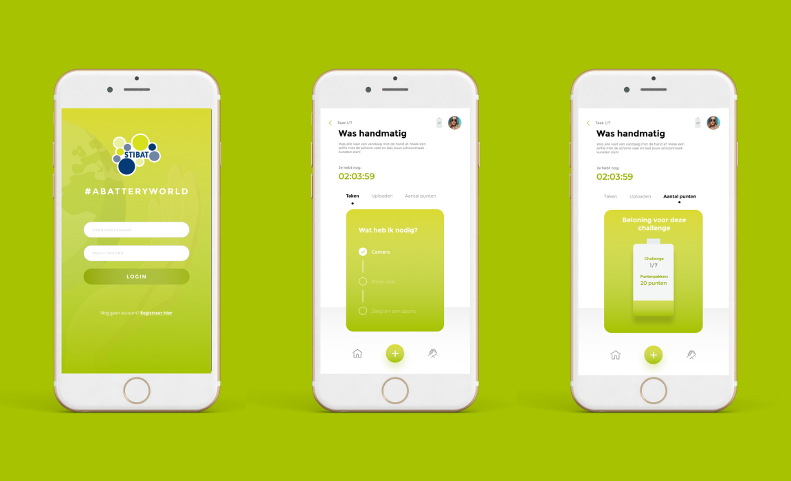

- 
- 
About A Battery World For a groupsproject, we were asked to set up a campaign for Stibat. The target audience is aware of current environmental problems. However, they are not concerned with these problems. The campagin is focussing on the return of empty batteries. It is necessary to provide this target group with awareness in the campaign, so that they understand the importance of handing in their batteries. The Process We started this project by making a concept for the campaign. The concept consists of an application with challenges. The challenges are related to the environment, in which many batteries are eventually collected. A slogan was made to trigger a feeling that people can strive and work together for a better world. It's a short, but powerful pay-off, the call to action. We also made a storyboard, to show the use of the application in a common situation. The storyboard gives an indication of the use of the application in a common situation. It is very important to be able to get in touch with the target group. That is why we decided to make promotional materials. For the promotional material it was decided to make a flyer, use a poster and hashtags on Instagram & Instagram stories. The result We have created an application with a slogan and promotional materials. The application gives people different assignments (challenges). By doing these assignments, the user helps to improve the world. These assignments have an indirect or direct relationship with batteries. For example, the user must carry out an assignment in which he or she has to wash the dirty dishes by hand instead of the dishwasher, in order to save energy, which in turn contributes to a better world. The user can also challenge his or her friends to do this. The faster the user completes the challenge, the more points the user gets. This also allows the user to win prizes and move up the rankings, which is designed to motivate people to actually complete the challenges. This makes the user feel proud that he or she has made a good contribution to the environment. This makes the user aware of the problems in the environment and therefore the user will pay more attention to the environment.